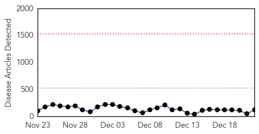
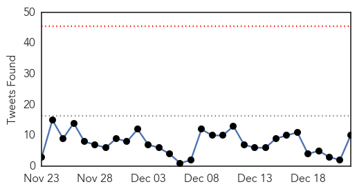
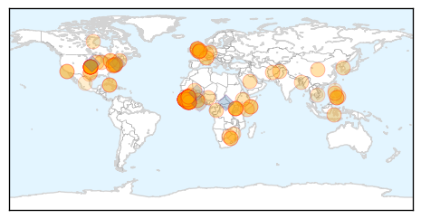
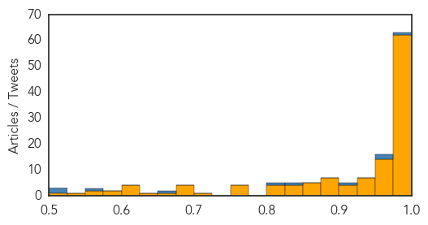

Toggle navigation
Early Warning
Daily Alerts
Ebola
Dec 22, 2014
30 Day Trends
Web: 0
alerts
, 0
warnings
Twitter: 0
alerts
, 0
warnings
Top Articles:
Showing top 50 articles...
1.000
Fighting Ebola on All Fronts by Christian Bréchot
1.000
Experts: It was a busy, black-eye year for disease control
1.000
More than 7500 dead from Ebola
1.000
Ebola Epidemic Continues in Africa, Despite Progress in Some Places
1.000
Ebola outbreak reaches Senegal, riots break out in Guinea
1.000
Fighting Ebola on all fronts
1.000
Ebola death toll passes 7,500
1.000
Ebola Epidemic Continues in Africa, Despite Progress in Some Places
1.000
PIH working to eradicate Ebola in Salone « Awoko Newspaper
1.000
Climate change to Ebola: what happened next? – podcast
0.999
Dlamini-Zuma: Ebola Crisis Galvanizing African Nations
0.999
Ebola Claims 7,000 Lives, Hits Sierra Leone Hardest
0.999
Is PH ready to handle Ebola?
0.999
Ebola outbreak 'far from over'
0.999
Ebola vaccine is safe for human use, say scientists
0.999
CDC chief sees promising signs, long road ahead for Ebola-hit countries
0.999
Mali ends last quarantines, could be Ebola-free next month
0.999
Experimental Ebola vaccine shows promise, experts say
0.998
CDC director Frieden cites progress, challenges in Ebola fight after W. Africa trip
0.998
CDC chief: 'World of difference' in Ebola fight, but complacency a risk
0.998
Lessons to learn from Ebola outbreak
0.998
CDC director warns against Ebola complacency
0.998
Courage of Ebola health workers should inspire greater efforts by all, says Ban
0.998
Courage of Ebola health workers should inspire greater efforts by all, says Ban - Sierra Leone
0.997
CDC director cites progress, challenges in Ebola fight
0.997
New church plan on Ebola: pastoral care as well as health, education. Published 12
0.997
Novel Biostatic Antimicrobial Technology From Clearstream-mPact Technology Partnership (CmTP) Offers Effective Protection Against Transmission of Ebola Virus
0.997
BiztechAfrica Mobile,Technology & IT News Africa
0.996
Sierra Leone Urges Safe Burials
0.996
New hope as DNA vaccines to fight Ebola proved safe
0.996
Taming Sierra Leone’s Ebola spread
0.996
RPT-Ebola response in rural Sierra Leone not yet rapid enough
0.995
CDC chief: West Africans say, thank you for helping us protect ourselves
0.993
NH doctor returns home after helping workers battle Ebola
0.993
Where have all ebola fearmongers gone?
0.993
Sioux Falls doctor experiences Ebola fight firsthand
0.992
Burial practices fuel spread of Ebola in Sierra Leone
0.992
Sierra Leone Bans Christmas As Ebola Death Toll Surpasses 7,500
0.992
UN Secretary General Visits Ebola Victims
0.992
Target: Ebola
0.991
Over 70 NHS heroes fighting Ebola this Christmas
0.991
Cebu News, The Freeman Sections, The Freeman
0.991
Unsafe burials fuelling most of Sierra Leone's Ebola outbreak
0.991
Sierra Leone launches safety in burial Ebola campaign
0.991
Burials fuel Ebola outbreak
0.991
Campaign against spread of Ebola in Guinean border region (United Nations Capital Development Fund)
0.990
Sierra Leone urges safe burials to stem Ebola
0.989
Chief of Staff urges religious leaders to support Ebola fight
0.988
UN Chief Commits to Help End Ebola in Sierra Leone
0.988
To fight Ebola, create a Health Workforce Reserve force
Top Tweets:
0.978
RITE Strategy in Liberia: Rapid Isolation and Treatment of Ebola – helping to stem Ebola outbreak there.
0.968
RT: Ebola OMS: 19031 cas, 7373 décès 17dec Sierra Leone : 8759, 2477 morts 14dec Liberia : 7819, 3346 morts 16dec Guinée : 245…
0.938
RT: Ebola outbreak in West Africa is far from over. Death toll is more than 7,300 people. Situation in Sierra Leone is especi…
0.921
Taming Sierra Leone's Ebola spread, via http://t.co/uaXs3R9dYd
0.905
Sierra Leone has largest number of Ebola cases right now; if scale-up of response continues, we can see case numbers drop
0.846
Spent several days in W Africa; spoke with Ebola patients & response staff; met w. many of CDC’s 170 staff working in affected countries
0.804
Ebola continues to spread in Sierra Leone and in Guinea’s capitol city. No time to relax our grip on the response.
0.794
Untested Ebola drug given to patients in Sierra Leone causes UK walkout http://t.co/HDt7QPBR7W
0.756
Ebola Deeply's Khadi on how diverse women's groups in Sierra Leone are coming together to tackle Ebola http://t.co/ra0k1raN3Y
0.755
Ebola response in rural Sierra Leone not yet rapid enough http://t.co/CUKpJzIQCG
0.749
Ebola Virus Disease: Platform for North-South Collaboration Urgently Needed http://t.co/xMVtdgidTp via
0.747
Ebola: 11th Sierra Leone Doctor Dies; Fire Destroys Supplies http://t.co/YYNHAgge36
0.694
RT: Ebola outbreak in West Africa: Latest numbers and downloadable data in today's ECDC update: http://t.co/x9bO0LRtJ8
0.683
RT: [REUTERS] Ebola response in rural Sierra Leone not yet rapid enough http://t.co/p4RXUoYVxZ EBOLANEWS
0.674
RT: Ebola Lockdown Ebola awareness poster art in progress http://t.c…
0.664
Ebola epidemic continues to spread in W. Africa. @DrFriedenCDC sees promising developments, uneven progress: http://t.co/jcRmTY3PfY
0.639
RT: Ebola & collapse of basic health services in Sierra Leone: sobering data in: http://t.co/v59KSGKigT http:…
0.602
.@DrFriedenCDC tours King Tom Cemetery in Sierra Leone, where safe & dignified burials are taking place. Ebola http://t.co/gW5TmGjoXz
0.565
WHO: Recorded Ebola Deaths Top 7,000 http://t.co/VqGHt7Nky6
0.526
WATCH: Ban Ki-moon visits Ebola-hit West Africa. EbolaResponse https://t.co/MqZZv88G1k
0.506
RT: From the port of LasPalmas to Ebola-affected countries, @CooperacionESP & @WFP ship food to where it's needed most http://t…
0.501
Massachusetts Doctor Cured of Ebola Returning to Liberia http://t.co/SxHI5SnvRV
Web/News Articles

Tweets

Article Locations

Article Confidences
